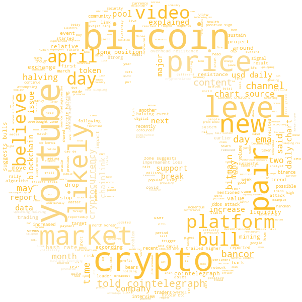

João Pedro Pereira
João Pedro Pereira
Web Scraping and WordCloud with python
Tue 19 May 2020In this project I used python Web Scraping to create a wordcloud with the trending words of 10 recent articles content from Coin Telegraph website. It's a media website covering blockchain technology and crypto assets.
For that I used libraries like Beautiful Soup(web scraping), NLTK (Natural languague processing) and worldcloud.

That was just for fun, but what if I say that someday I want to know the trending topics from this page or maybe any website? That would be great! My thanks to @DataScienceAcademy and @Datacamp for the helping content :)
Check it out my repository for all files.